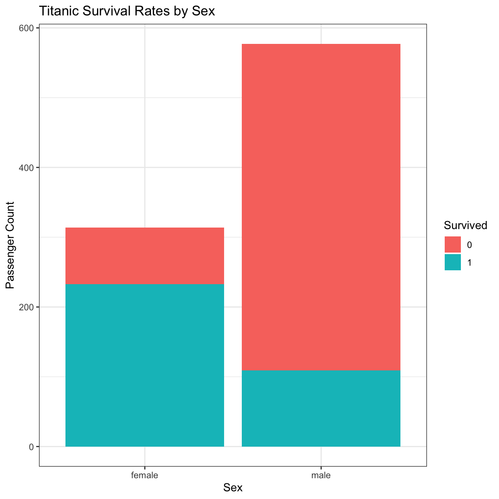
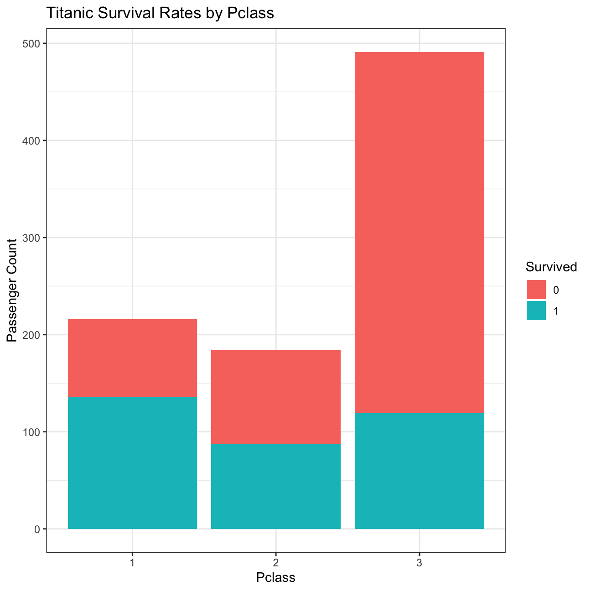
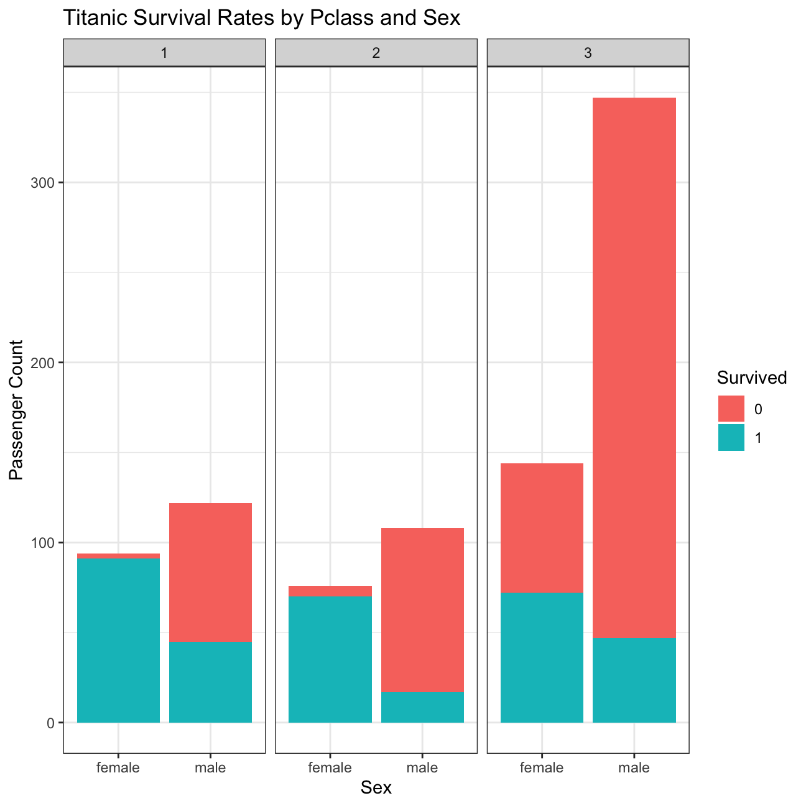
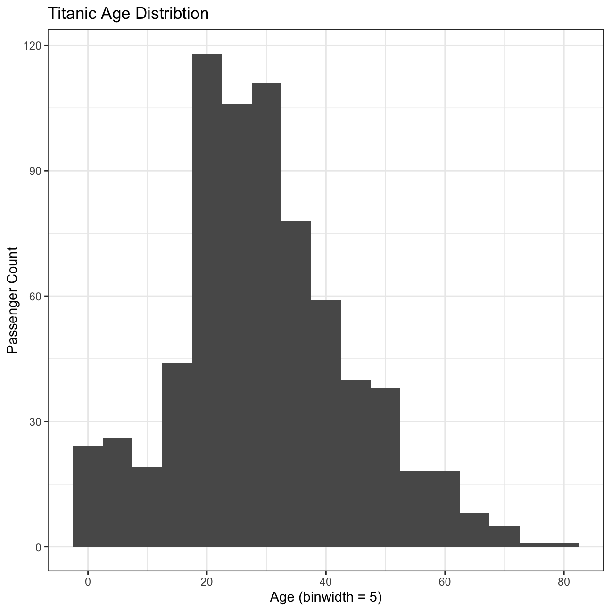
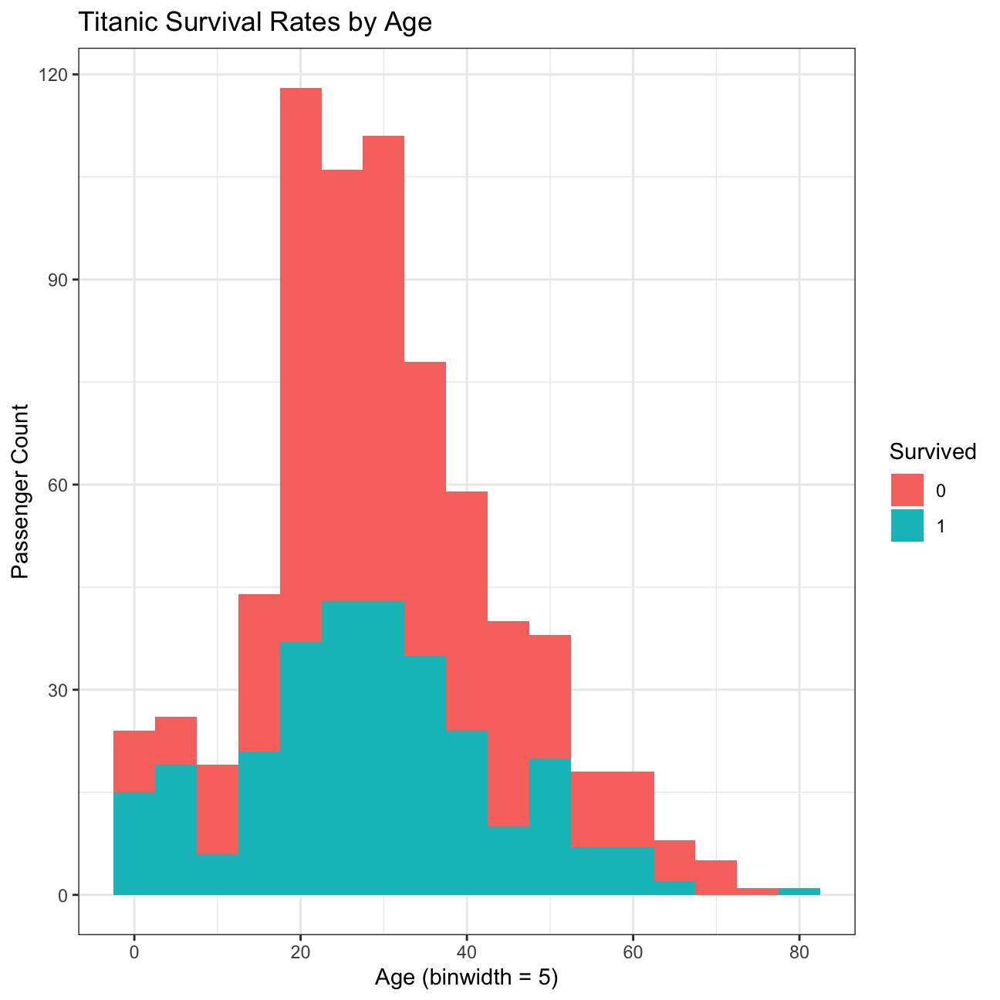
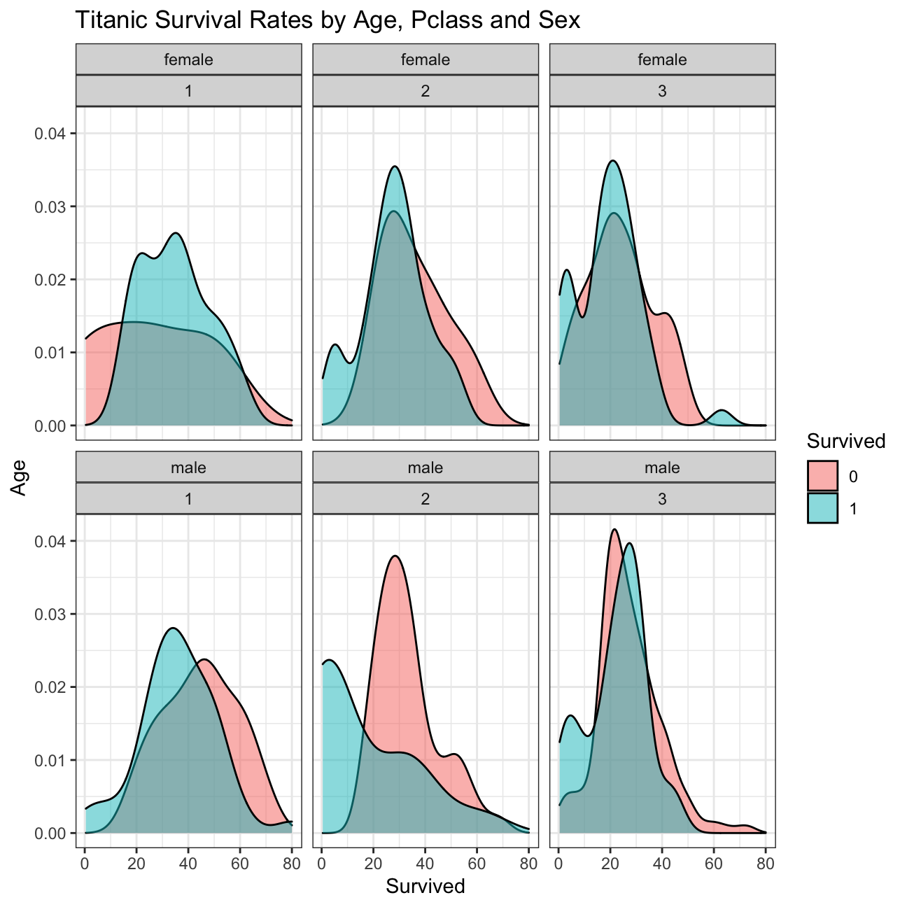
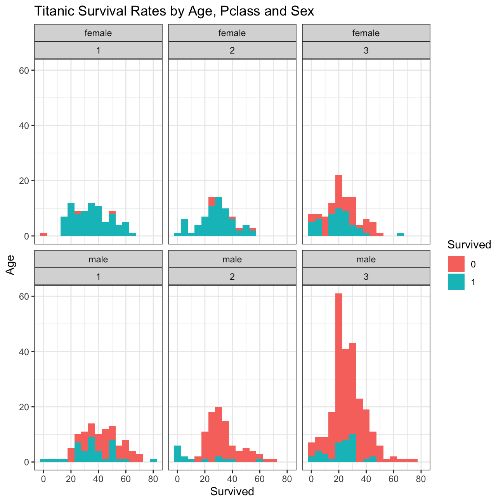

titanic <- read_csv(here::here("data", "titanic.csv"))
glimpse(titanic)## Rows: 891
## Columns: 12
## $ PassengerId <dbl> 1, 2, 3, 4, 5, 6, 7, 8, 9, 10, 11, 12, 13, 14, 15, 16, 17…
## $ Survived <dbl> 0, 1, 1, 1, 0, 0, 0, 0, 1, 1, 1, 1, 0, 0, 0, 1, 0, 1, 0, …
## $ Pclass <dbl> 3, 1, 3, 1, 3, 3, 1, 3, 3, 2, 3, 1, 3, 3, 3, 2, 3, 2, 3, …
## $ Name <chr> "Braund, Mr. Owen Harris", "Cumings, Mrs. John Bradley (F…
## $ Sex <chr> "male", "female", "female", "female", "male", "male", "ma…
## $ Age <dbl> 22, 38, 26, 35, 35, NA, 54, 2, 27, 14, 4, 58, 20, 39, 14,…
## $ SibSp <dbl> 1, 1, 0, 1, 0, 0, 0, 3, 0, 1, 1, 0, 0, 1, 0, 0, 4, 0, 1, …
## $ Parch <dbl> 0, 0, 0, 0, 0, 0, 0, 1, 2, 0, 1, 0, 0, 5, 0, 0, 1, 0, 0, …
## $ Ticket <chr> "A/5 21171", "PC 17599", "STON/O2. 3101282", "113803", "3…
## $ Fare <dbl> 7.25, 71.28, 7.92, 53.10, 8.05, 8.46, 51.86, 21.07, 11.13…
## $ Cabin <chr> NA, "C85", NA, "C123", NA, NA, "E46", NA, NA, NA, "G6", "…
## $ Embarked <chr> "S", "C", "S", "S", "S", "Q", "S", "S", "S", "C", "S", "S…titanic$Pclass <- as.factor(titanic$Pclass)
titanic$Survived <- as.factor(titanic$Survived)
titanic$Sex <- as.factor(titanic$Sex)
titanic$Embarked <- as.factor(titanic$Embarked)What was the survival rate?
prop.table(table(titanic$Survived))##
## 0 1
## 0.616 0.384What was the survival rate by gender?
ggplot(titanic, aes(x = Sex, fill = Survived)) +
theme_bw() +
geom_bar() +
labs(y = "Passenger Count",
title = "Titanic Survival Rates by Sex")
What was the survival rate by class of ticket?
ggplot(titanic, aes(x = Pclass, fill = Survived)) +
theme_bw() +
geom_bar() +
labs(y = "Passenger Count",
title = "Titanic Survival Rates by Pclass")
What was the survival rate by class of ticket and gender?
ggplot(titanic, aes(x = Sex, fill = Survived)) +
theme_bw() +
facet_wrap(~ Pclass) +
geom_bar() +
labs(y = "Passenger Count",
title = "Titanic Survival Rates by Pclass and Sex")
What is the distribution of passenger ages?
ggplot(titanic, aes(x = Age)) +
theme_bw() +
geom_histogram(binwidth = 5) +
labs(y = "Passenger Count",
x = "Age (binwidth = 5)",
title = "Titanic Age Distribtion")
What are the survival rates by age?
ggplot(titanic, aes(x = Age, fill = Survived)) +
theme_bw() +
geom_histogram(binwidth = 5) +
labs(y = "Passenger Count",
x = "Age (binwidth = 5)",
title = "Titanic Survival Rates by Age")
ggplot(titanic, aes(x = Age, fill = Survived)) +
theme_bw() +
facet_wrap(Sex ~ Pclass) +
geom_density(alpha = 0.5) +
labs(y = "Age",
x = "Survived",
title = "Titanic Survival Rates by Age, Pclass and Sex")
What is the survival rates by age when segmented by gender and class of ticket?
ggplot(titanic, aes(x = Age, fill = Survived)) +
theme_bw() +
facet_wrap(Sex ~ Pclass) +
geom_histogram(binwidth = 5) +
labs(y = "Age",
x = "Survived",
title = "Titanic Survival Rates by Age, Pclass and Sex")